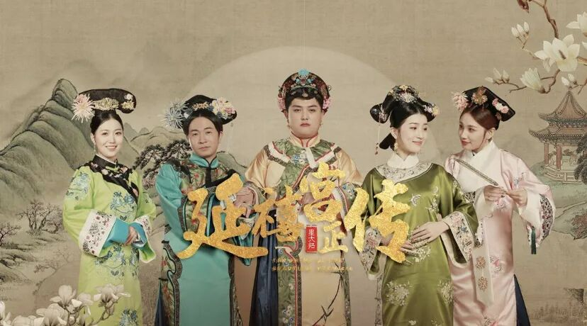
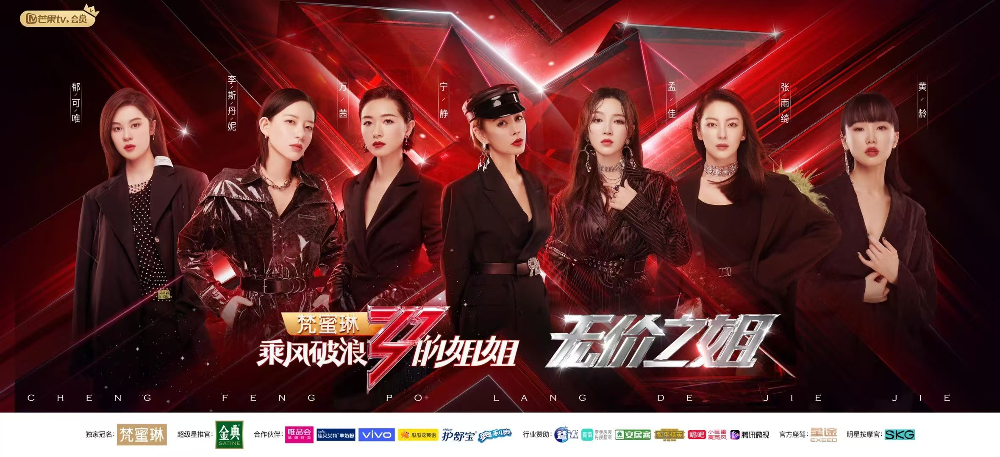
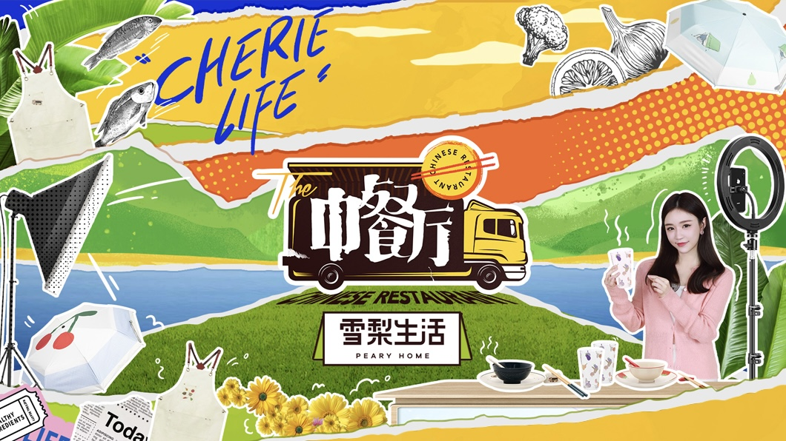
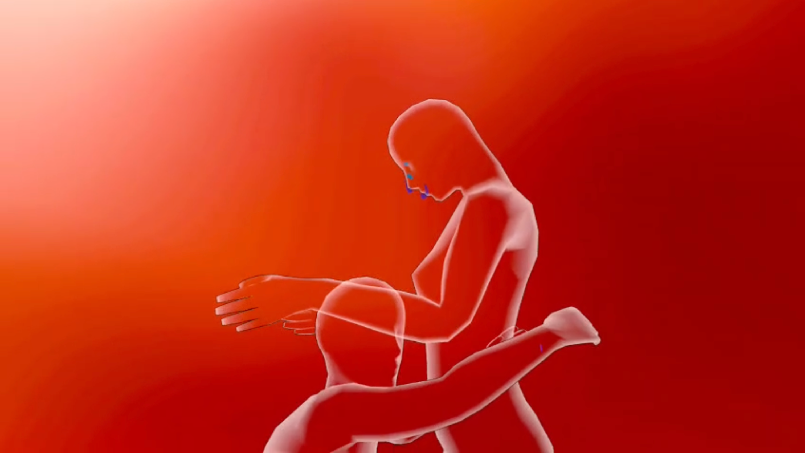
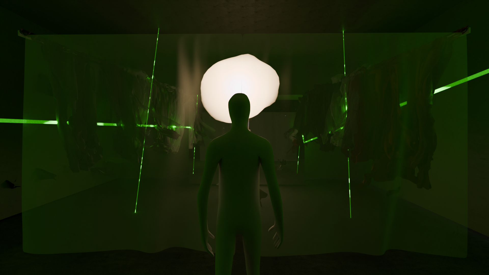
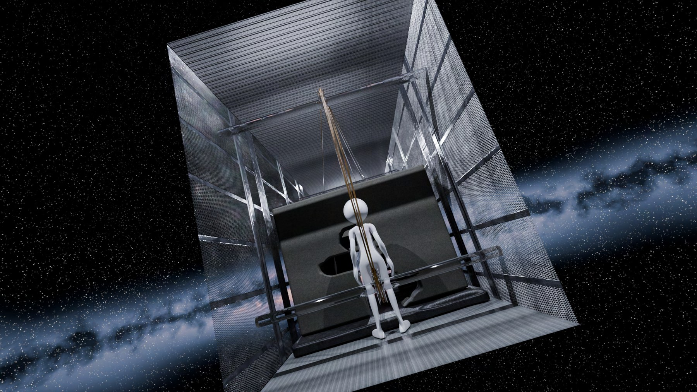

Defining how a brand speaks, behaves, and earns attention across channels and cultures.
Creative strategist / experiential storyteller
Audrey Ouyang
A Sydney-based creative strategist designing experiences across production and research.
Featured Work
Selected Brand Work

Herborist & Yanxi Palace
A heritage cosmetics brand staged as palace drama—a livestream that became an industry case study.
View case study
Live Production 丨 Reality Show 丨 Culture-led Commerce
Sisters Who Make Waves · Season1
Visual concepts, cueing, and broadcast systems for one of China's most-watched reality formats.

Brand Integration 丨 Variety TV 丨 Livestream Commerce
Chinese Restaurant S5 & Cherie Life
A first-of-its-kind integration linking prime-time variety, celebrity, and livestream commerce.

Brand Partnership 丨 Live Event Production 丨 Multimedia Influence
D.Forward 4th Anniversary Gala
End-to-end production and brand sponsorship for a livestreamed gala—four teams, cross-platform reach.
Experience & Speculative Design

Experience Design 丨 Immersive Narrative 丨 Audience Research
Meet Your Self
A reflective experience on solitude, built on the EmbodiMap method at UNSW's Big Anxiety Research Centre.

Speculative Design 丨 Interactive Installation 丨 Social Impact
Neorality
Digital exclusion reframed as a spatial crisis of visibility, audibility, and public presence.

Discursive Design 丨 Spatial Installation 丨 Cultural Research
DE-GREE
Credential anxiety in China's AI transition, made walkable—posture, tension, and symbolic passage.

Industrial Design 丨 Interaction Design 丨 Brand Identity
Bravod
A proactive anti-voyeurism system that empowers women to actively defend their privacy in public toilets.
About Me
From broadcast stages to brand systems, Audrey builds experiences that move people.
Audrey is a brand experience designer and creative strategist working across in-house branding, spatial storytelling, and design research.
Her practice connects commercial insight with immersive experience design, spanning television production, content-commerce, social media growth, cross-cultural communications, and participatory research. She builds brand concepts, campaign systems, and user journeys that turn audience behaviour into measurable creative value.
Designing environments and formats where brand becomes something audiences participate in.
Grounding creative decisions in user testing, lived experience, and cross-market insight.
Get in touch
Open to brand and content roles in Australia.
Currently based in Sydney. Available for full-time, contract, and select freelance briefs.
If my work resonates with you, I’d love to hear from you — or just to say hi :)